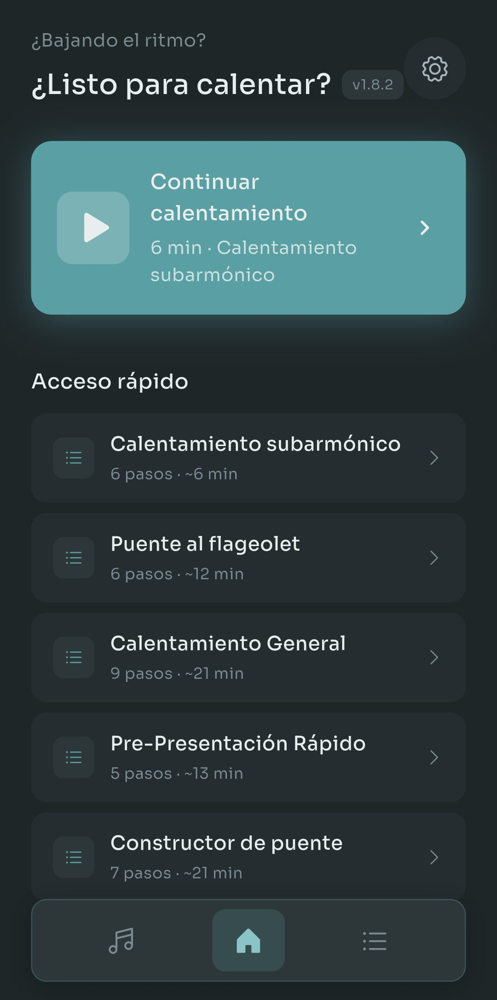
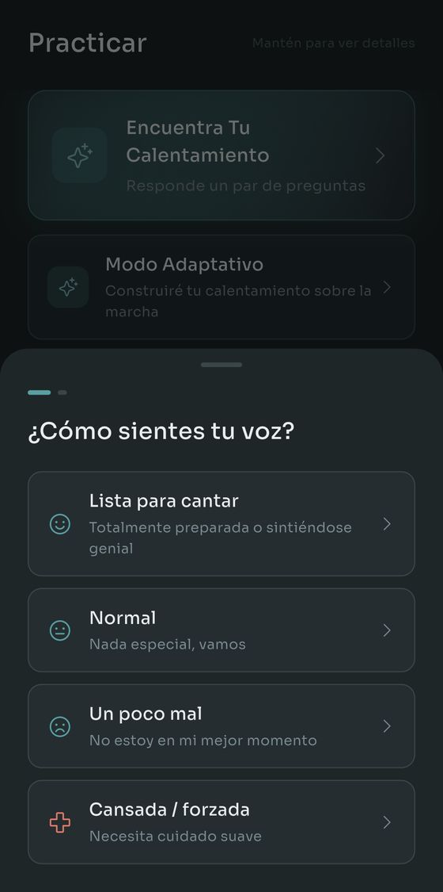
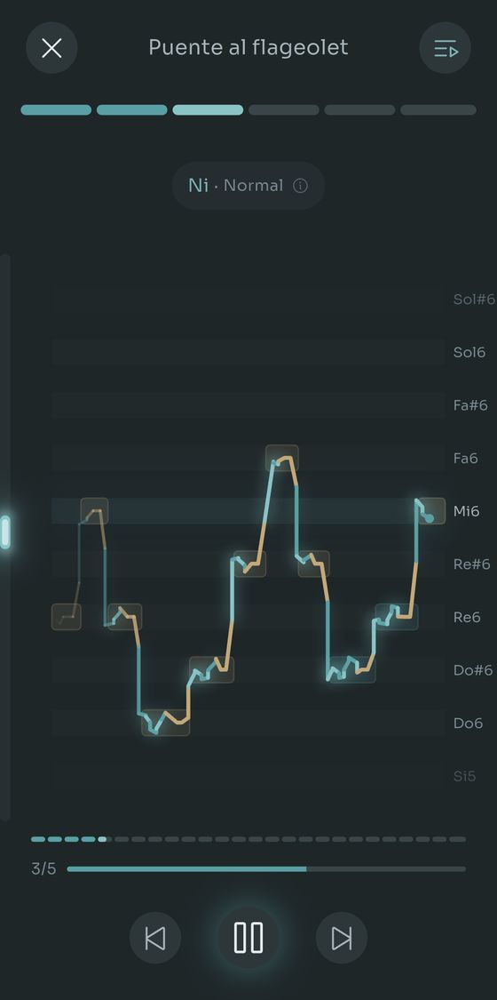
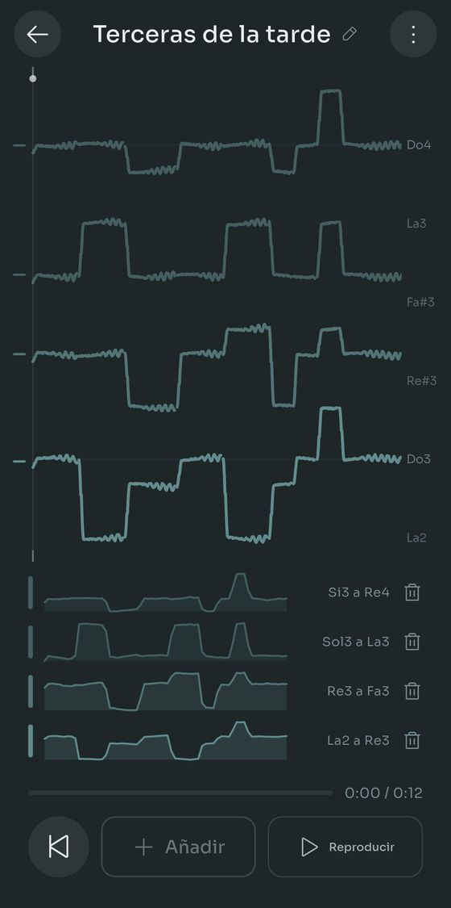
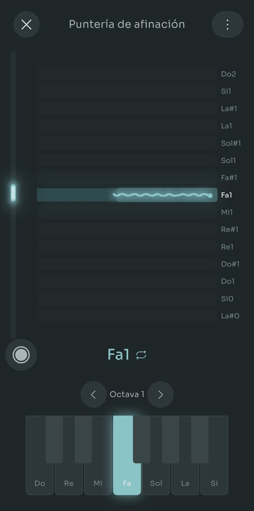
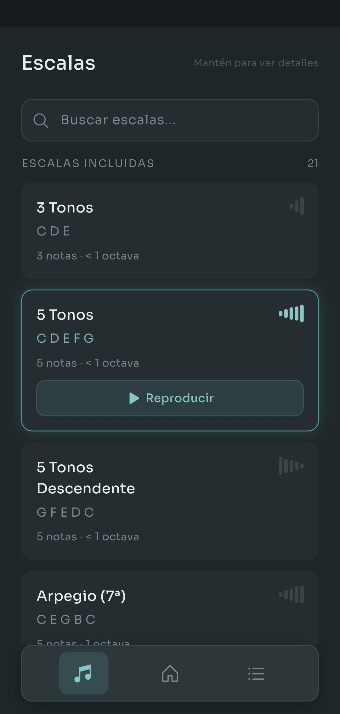

Scalita toca escalas con un Salamander Grand Piano mientras cantas encima. Configuras tu rango vocal una vez y cada ejercicio se transpone para adaptarse a él.
Escalas simples. Piano real. Sin tonterías.






Nada que leer antes, nada que registrar.
Canta al teléfono y Scalita encuentra tu nota más grave y la más aguda. O elige un tipo de voz y sáltatelo.
Vienen 21 escalas y 14 rutinas. ¿No sabes cuál? Responde dos preguntas y Encontrar Mi Calentamiento elige por ti.
El piano toca el patrón, sube un semitono y lo vuelve a tocar, todo dentro del rango que configuraste.
Samples reales de un Salamander Grand Piano en las 88 teclas, de A0 a C8. Por grave o agudo que cantes, hay una nota grabada para eso.
Graba una línea. Canta otra encima y escucha las dos juntas. Hasta cuatro voces, y una voz puede ser una toma del micrófono, un archivo que ya tenías o una escala que toca la app.
Grabar es gratis. Las cuatro voces también, y la duración también. Pro solo entra si quieres guardar más de una armonía a la vez, y siempre puedes montar otra entera y quedarte con esa en lugar de la anterior.
El resto de la app, en cuatro piezas. Ninguna te estorba el primer día.
Encontrar Mi Calentamiento pregunta cómo tienes la voz hoy y qué quieres trabajar, y luego elige la rutina y pone el tempo. El Modo Adaptativo tira el plan entero: después de cada ejercicio dices cómo fue y el siguiente se ajusta. Dile que tienes diez minutos y reparte la sesión para que quepa, con vuelta a la calma incluida.
Ponte auriculares y un trazo en vivo te muestra dónde caes en cada nota, verde cuando estás afinado y ámbar cuando te desvías. La puntería de notas lo reduce a una tecla cada vez, y ahora guarda tus tomas: el audio, la línea de afinación y lo que hacía el teclado, para que abras una la semana que viene y oigas si algo se movió.
Casi todas las apps de calentamiento se quedan en voz de pecho y de cabeza. Configura un rango para cada registro que uses de verdad y se abren tres rutinas dedicadas: la vibración por debajo de tu voz de pecho, el tono aflautado por encima de tu rango y el silbido más arriba todavía. Marca también tu quiebre vocal y los ejercicios se construyen alrededor.
Crea escalas y rutinas desde cero: intervalos, sílabas, tempos, nota inicial. O canta o toca un patrón al Detector de Escalas y te escribe las notas. Reconstruido para 1.9.0, necesita alrededor de la mitad de correcciones sobre canto real, y señala las notas que fueron a cara o cruz para que sepas dónde mirar.
Todas las funciones funcionan gratis. Pro quita los límites de cuánto guardas.
Un solo pago, sin suscripción. El precio de cada país lo fija Google Play.
Gratis en Google Play. Sin cuenta, sin anuncios, nada que cancelar.
Solo Android por ahora. En español, inglés, francés, portugués y alemán.